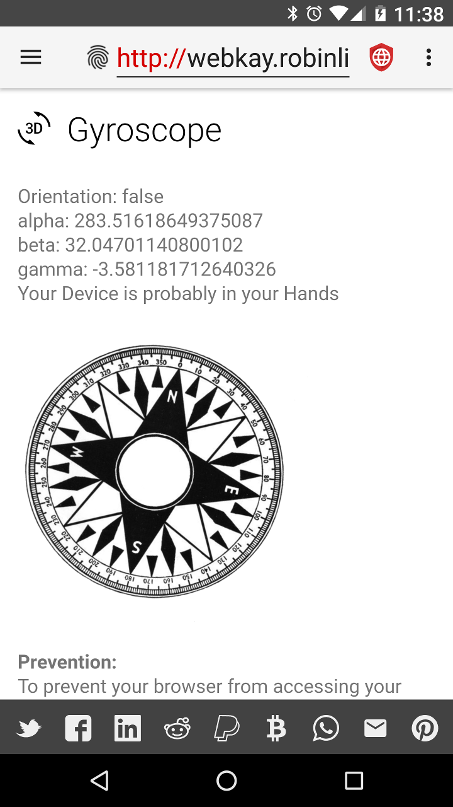

JavaScript ist machtvoll JavaScript ist machtvoll
JavaScript ist machtvoll JavaScript ist machtvollIn den frühen Tagen des Internets waren Websites statisch, zeigten also nur Text und Bilder, welche auf dem Bildschirm sichtbar sind, veränderten sich aber nicht oder interagierten. Natürlich passierte auf solch statischen Websites nicht viel Interessantes. Viele verschiedene Technologien wurden für dynamische Websites entwickelt. Javascript war eine davon.
Javascript ist eine Programmiersprache. Viele Webserver hosten Programme geschrieben in Javascript, welche an die Geräte als Teil der Website gesandt werden. Das Gerät führt das Javascript auf dem lokalen Prozessor aus und folgt den Anweisungen des Programms, was beispielsweise Bilder animieren kann, ein Menü öffnen und viele andere großartige Dinge.
 JavaScript ist gefährlich
JavaScript ist gefährlichNatürlich birgt das Konzept von willkürlich ausgeführten Programmen aus einer Website heraus ein großes gefahrenprotenzial. Also werden Limitierungen in Javascript gesetzt, damit Dinge wie Viren vorgebeugt wird. Wie auch immer, im Endeffekt sind diese Limitationen sehr ausgedehnt. Unten ist ein Screenshot von webkay, einer Website die Beispiele für von einem Gerät produzierten Informationen bietet, wenn Javascript auf einem Gerät läuft. Browser Leaks ist eine andere gute Quelle.

Zum Schutz der Privatsphäre wäre es ideal das Web ohne Javascript zu nutzen. Jedoch benötigen manche Websites legitimerweise
JavaScript, um ihre Zwecke zu erfüllen und andere funktionieren nicht korrekt ohne Javascript, selbst wenn sie dazu umprogrammiert werden könnten.
Privacy Browser geht auf diese Problematik ein und macht es einfach, Javascript zu (de-)aktivieren. Ein Knopfdruck auf das Privatsphäre-Schild wechselt zwischen blau
oder gelb  (beide zeigen an, dass
JavaScript aus ist) und rot (JavaScript aktiviert) und aktualisieren die Website.
Der Vergleich der verschiedenen Informationen, die webkay mit und ohne Javascript sammeln kann ist informativ.
(beide zeigen an, dass
JavaScript aus ist) und rot (JavaScript aktiviert) und aktualisieren die Website.
Der Vergleich der verschiedenen Informationen, die webkay mit und ohne Javascript sammeln kann ist informativ.
Browsing the internet with JavaScript disabled, and only enabling it if needed, goes a long way toward protecting privacy. In addition, JavaScript is used to load much of the annoying advertisements and extra cruft that comes along with most modern websites. With it disabled, websites will load faster, consume less network traffic, and use less CPU power, which leads to longer battery life.